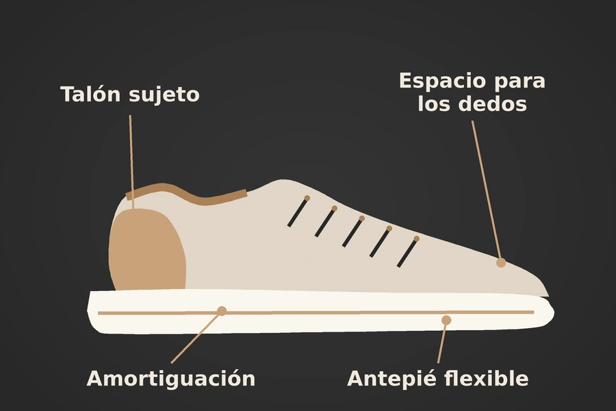
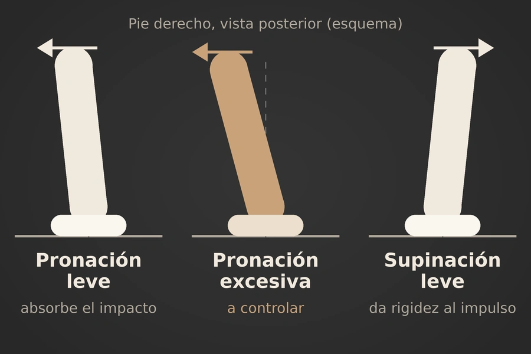
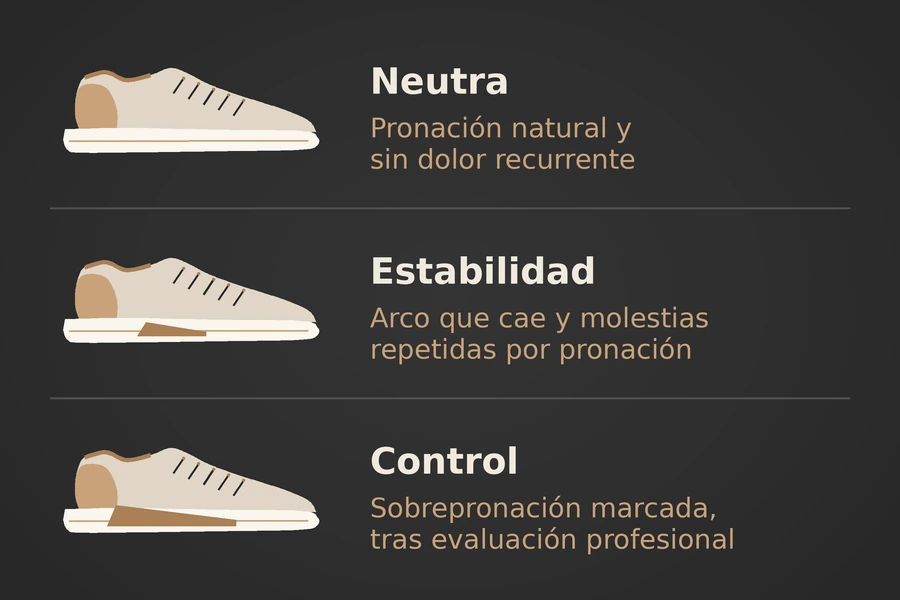

Running: el calzado debe proteger sin bloquear
Para correr, la lógica del calzado es distinta a la del entrenamiento de hipertrofia. Cada zancada implica impactos repetidos, adaptación del pie al suelo y una transición rápida hacia el impulso.
Por eso, una buena zapatilla de running debe permitir el movimiento natural del pie mientras controla los excesos que pueden sobrecargar el tobillo, los tendones y la rodilla.


La pronación no es enemiga
La pronación es un movimiento normal y necesario al correr. Cuando el pie toca el suelo, el retropié rota ligeramente hacia dentro y el arco medial baja un poco; esto ayuda a absorber fuerzas y adaptarse a irregularidades de la superficie.
Después, el pie debe recuperar rigidez mediante una ligera supinación para impulsar el cuerpo hacia adelante. Por eso, el objetivo no debe ser “eliminar la pronación”, sino evitar una pronación excesiva, rápida o acompañada de dolor, fatiga y pérdida de control de la rodilla. La evidencia no considera que la pronación, por sí sola, sea un predictor universal de lesión en corredores.
Qué debe hacer una zapatilla
Una zapatilla de running adecuada cumple cuatro funciones principales:
- Amortiguar: reducir la carga repetida de los impactos, especialmente en asfalto o superficies duras.
- Estabilizar: sujetar el talón y limitar desplazamientos excesivos del retropié.
- Guiar el apoyo: permitir que el pie proné de forma funcional, sin que el arco se derrumbe bajo cada zancada.
- Facilitar el despegue: ser suficientemente flexible en el antepié para que los dedos y el pie impulsen el cuerpo.
La amortiguación no debe ser tan blanda que el pie se sienta inestable. Una zapatilla excesivamente alta o muy suave puede hacer que el tobillo tenga que corregir más movimiento lateral al pisar, sobre todo si hay fatiga, terreno irregular o antecedentes de esguinces. Las propiedades de amortiguación del talón influyen de manera importante en las fuerzas de reacción contra el suelo y en la mecánica de las extremidades inferiores.
Zapatilla neutra
La zapatilla neutra está pensada para personas que corren cómodamente sin una caída marcada del arco ni inclinación excesiva del talón. No intenta corregir el movimiento del pie de forma agresiva; permite una pronación natural y ofrece amortiguación, ajuste y tracción.
Es una buena opción para corredores que no tienen dolor recurrente asociado a la pisada, incluso si su arco no es muy alto o muy bajo. Tener el arco bajo o desgastar el interior de la suela no significa automáticamente que una persona necesite una zapatilla de control de pronación.
La prioridad debe ser que el calzado se sienta cómodo, que el talón no se deslice, que los dedos tengan espacio y que no haya dolor durante ni después de correr.

Zapatilla de estabilidad
La zapatilla de estabilidad ofrece más soporte en la zona del mediopié y del talón. Suele tener una base más amplia, una geometría que limita el colapso hacia dentro y elementos que ayudan a controlar la eversión del retropié; es decir, el movimiento vinculado con la sobrepronación.
Puede ser útil para quien muestra una caída visible del arco mientras corre, un talón que se inclina mucho hacia dentro, fatiga rápida del pie o molestias recurrentes relacionadas con sobrecarga en la parte interna del tobillo, la fascia plantar, el tendón tibial posterior o ciertas zonas de la rodilla.
En corredores recreativos con lesiones consideradas relacionadas con pronación, las zapatillas de control de movimiento redujeron el riesgo frente a zapatillas neutras. Sin embargo, ese beneficio no se extendió de forma clara a todas las lesiones de running, por lo que no deben recomendarse por rutina a toda persona.
Zapatilla de control
Las zapatillas de control de movimiento son una versión más firme y estructurada de las zapatillas de estabilidad. Se reservan para personas con sobrepronación más evidente, gran fatiga del arco o antecedentes de lesiones que mejoran al tener una plataforma más estable.
Su función no es “enderezar” el pie de manera rígida, sino disminuir la velocidad y el rango de caída hacia dentro cuando el cuerpo ya no logra controlarlo por sí solo. Si se siente incómoda, genera dolor en la parte externa del pie o cambia demasiado la forma natural de correr, puede no ser apropiada.
La respuesta correcta no es elegir automáticamente el calzado más duro. Una persona con un pie rígido, arco alto o tendencia a supinar puede necesitar más amortiguación y flexibilidad, no más control medial.
Tobillo y ligamentos
En running, la lesión más común de ligamentos del tobillo suele ocurrir por una inversión repentina: el pie se va hacia afuera y el tobillo se dobla hacia dentro. Esto puede suceder en aceras irregulares, piedras, raíces, bordillos o cuando existe fatiga.
Por eso, para correr se recomienda una zapatilla baja específica de running, con un talón bien sujeto y una base estable. No es necesario que sea alta como una zapatilla de básquet: correr requiere movilidad repetida de tobillo y una zancada fluida. Una caña alta puede sentirse protectora, pero no es la forma principal de prevenir un esguince en carrera.
La mejor protección de los ligamentos combina un calzado con buen ajuste, aumento gradual de kilómetros, fortalecimiento de pantorrillas, peroneos y músculos del pie, trabajo de equilibrio a una pierna y atención al terreno.
La marcha aeróbica
En la marcha rápida el impacto es menor que en running, pero el patrón se repite miles de veces. Por ello, se necesita una zapatilla cómoda, estable y con amortiguación moderada, pero no necesariamente una zapatilla muy rígida o de control intenso.
Para caminar, una zapatilla neutra suele ser adecuada si no hay dolor. Si el arco se desploma después de varios kilómetros, aparece dolor en la parte interna del tobillo o la rodilla se inclina hacia dentro de manera visible, una zapatilla de estabilidad puede aportar más control.
La clave es que el zapato permita avanzar desde el talón hacia los dedos sin forzar el pie, que el talón quede bien fijado y que los dedos tengan suficiente espacio para participar en el apoyo.
Cómo elegir
| Situación | Tipo de zapatilla recomendado |
|---|---|
| Corres sin dolor y tu pie se siente estable | Neutra, cómoda y específica para running |
| El arco cae visiblemente y hay molestias repetidas relacionadas con pronación | Estabilidad |
| Hay sobrepronación marcada, fatiga del arco o lesión recurrente que mejora con soporte | Control de movimiento, idealmente tras evaluación profesional |
| Pie rígido, arco alto o tendencia a apoyar más por el borde externo | Neutra con amortiguación suficiente y buena flexibilidad |
| Caminata aeróbica | Neutra estable o de estabilidad moderada, según comodidad y síntomas |
| Esguinces repetidos de tobillo | Zapatilla con talón firme y base estable, junto con rehabilitación y ejercicios de equilibrio |
Más que el zapato
La zapatilla ayuda, pero no sustituye el entrenamiento del cuerpo. El aumento brusco de kilometraje, correr con fatiga extrema, una mala recuperación o falta de fuerza pueden causar problemas incluso con el mejor calzado.
Para reducir lesiones, aumenta volumen y velocidad gradualmente; incluye fuerza de pantorrillas, glúteos y pie; realiza equilibrio a una pierna; y cambia las zapatillas cuando la suela esté muy desgastada o hayan perdido estabilidad. La elección ideal es la que permite correr con comodidad, apoyo seguro y ausencia de dolor progresivo, no la que promete corregir todos los movimientos del pie.
Fuentes consultadas
Conoce todo lo que tratamos en nuestra página de podología o lee más en el Blog de BeautyPod. Si buscas calzado para entrenar con pesas, lee Podología y GYM: tipo de zapatilla para hipertrofia.